{kind=link}
{kind=link}
{kind=link}
{kind=link}
{kind=link}
{kind=link}
{kind=link}
{kind=link}

In 1999, the Bikesummer organizers invited us to teach a class on idiotic bicycle construction techniques. We were only too pleased to have an excuse to visit San Francisco.
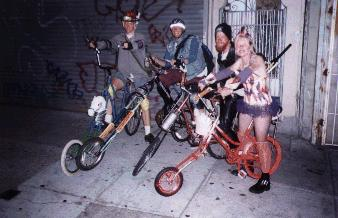
We arrived in two stages. Megulon-5 took the bus down at the beginning of Bikesummer, to soften up the couches we'd all be sleeping on and to enjoy that SF cyclist lifestyle that is apparently found nowhere else in the country. He was appalled to find that the city was already in the clutches of the Black Heart Chopper Club, a group of messenger cowpoke circus freaks.
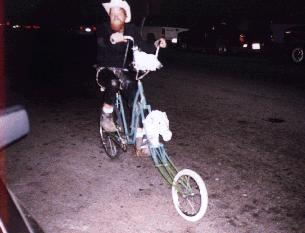
They already had some bikes, but after a pile of frames destined for the bikesummer class was deposited on their step, we all couldn't help but make several more. Princess's chopped scooter was used to haul parts to King Courier, where a confederate joined them together. Lance E. Pants took the occasion to actually weld his chopper, Ground Beef, which was previously held together with leather straps.
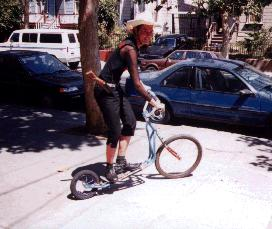 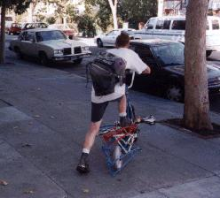
Then Lance got so excited about his new tallbike that he lit the mid-drive wheel on fire and rode it until the flames licking his hind end through those thick leather pants became unbearable. It took us a long time to put out that burning tire.
Meanwhile, everyone else borrowed a truck and drove down from Portland. Most of us have spent a quiet evening passed out on a pile of bikes, but we didn't realize how much more difficult it is in a moving truck. Nobody was injured and the tanks weren't breached, so it turned out okay.
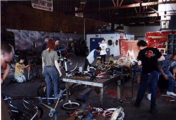
The chopper building workshop was a new experience for the visiting C.H.U.N.K. 666 dignitaries as well as the local participants, since we were not used to having such a spacious, well-equipped shop. Having a few unfortunate people staffing the welding equipment and slapping together bikes that were already cut and assembled made for fast construction as well. And a spread-out selection of raw material! What a luxury! Usually we have to delve into the bottom of an interlocking pile of bikes to wrest what we need from the murk.
As a result, some fifteen bikes were made and ridden that day. Another surprise is that we weren't kicked out by the friendly staff of The Crucible, (who let us use their space for donations, thanks!), because we're not exactly the most organized and safe people in the lab. Kansas caught his arm on fire, and the welders got lots of fumes from the chrome that the assemblers didn't file off, but there were no major injuries.
Jay showed up on the Choppacabra, or the Chupacopper, or whatever, a chopper with grabbing arms hooked to the pedals and a propane flamethrower. Let it also be known that his flexi-chopper was the only survivor of the flaming ramp at the bike rodeo about a year earlier.
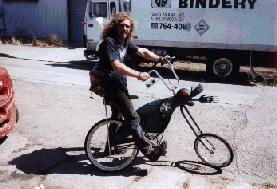
| 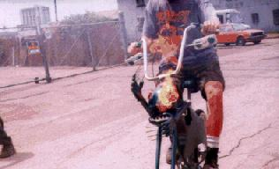 |
| Photo by Thandi. |
|
Thandi and Britney made a tandem with a passenger seat. Some of the old hands scoffed when they started putting it together, because it's hard to throw together a tandem that isn't a rolling maintenance stop, but there it is, and it rides better than most of our bikes. |
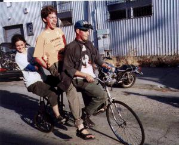 |
| Photo by Thandi. |
| 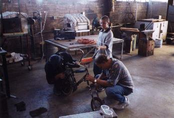 | The best moment was when a father and son were strolling by the shop and joined in. The kid rode away on his first chopper, heralding a lifetime of pain and destruction. |
|
Many bikes were donated by the Hunter's Point bicycle program, Pedal Revolution, and a few other forgotten origins (sorry, thanks). Sheff from Pedal Rev brought his busted old long chopper and turned it into a working new tall chopper, and used it to fetch beer from the local store at least three times. The tall chopper, as opposed to the tallbike, was at the time the latest stage in chopper design, which Sheff apparently discovered at the same time that we did. |
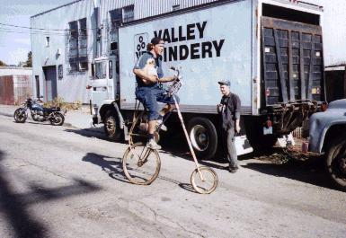 |
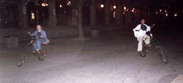
The session was followed by a ride through annoying Berkeley. We stopped at the college campus and let some kids ride for a while, only to be mobbed by packs of suburchins who wanted to try too. We got tired of keeping track of all of the leather jackets and chains that we were holding as collateral, so we taped flares to our bikes, lit off a few roman candles, and rode on, only to be immediately pulled over by the police. Hm, I'm in a strange city on a slow bike with a flare stuck to it, should I stop? After calling in and finding that nobody had complained, and we hadn't actually hurt anybody, the disappointed officer released us. We went on to drink more beer and race on the university track.
Bolstered by our successful conquest of Berkeley, we returned to the city and fully ruled it the next day, whether the locals noticed it or not. An idyllic ride took us all over the city and into the night.
Idyllic? Yes, too idyllic. Something was wrong. The city was just too easy on us. What of the dreaded chopper-eating hills? Why had nobody fallen prey to the accursed micro-climates of the region? Perhaps we had been lucky. To avoid becoming soft and complacent, we tested our mettle by purchasing lots of whiskey and drinking it quickly before sailing down Lombard Street, the second most twisty road in the city. Our losses were consistent with what we tend to suffer on the streets of Portland, so we considered the test to be passed.
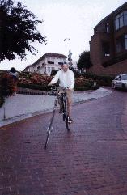 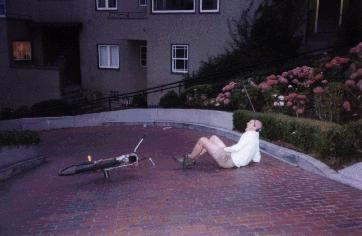
| Copyright 2003 Megulon Five <megulon5@dclxvi.org>. |
|
This work is licensed under a Creative Commons License. | Last modified 8 August 2001. |